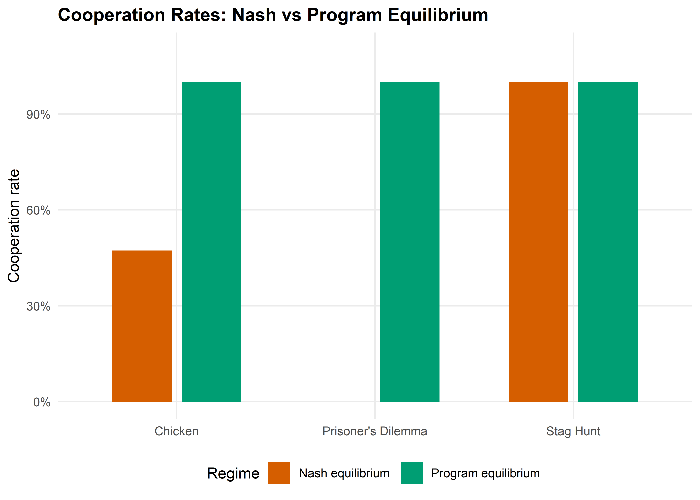
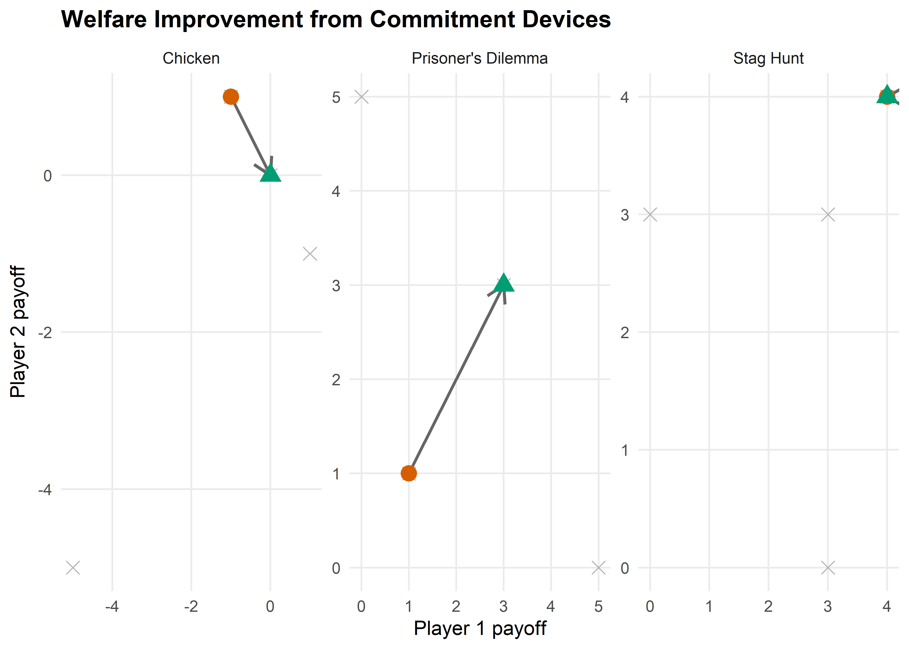

# Define several 2x2 symmetric games as payoff matrices
games <- list(
"Prisoner's Dilemma" = list(
A = matrix(c(3, 0, 5, 1), nrow = 2, byrow = TRUE,
dimnames = list(c("C", "D"), c("C", "D"))),
B = matrix(c(3, 5, 0, 1), nrow = 2, byrow = TRUE,
dimnames = list(c("C", "D"), c("C", "D")))
),
"Stag Hunt" = list(
A = matrix(c(4, 0, 3, 3), nrow = 2, byrow = TRUE,
dimnames = list(c("Stag", "Hare"), c("Stag", "Hare"))),
B = matrix(c(4, 3, 0, 3), nrow = 2, byrow = TRUE,
dimnames = list(c("Stag", "Hare"), c("Stag", "Hare")))
),
"Chicken" = list(
A = matrix(c(0, -1, 1, -5), nrow = 2, byrow = TRUE,
dimnames = list(c("Swerve", "Straight"), c("Swerve", "Straight"))),
B = matrix(c(0, 1, -1, -5), nrow = 2, byrow = TRUE,
dimnames = list(c("Swerve", "Straight"), c("Swerve", "Straight")))
)
)42 Cooperative AI
Abstract
Commitment devices, program equilibrium, and welfare gains from AI-to-AI cooperation mechanisms.
Keywords
cooperative AI, commitment, program equilibrium, Prisoner’s Dilemma, cooperation
43 Cooperative AI
Learning objectives
- Explain how commitment devices transform non-cooperative games into cooperative outcomes.
- Define program equilibrium and show how mutual code inspection enables cooperation.
- Implement a commitment game framework and compare outcomes with and without commitment.
- Quantify the welfare improvement from commitment across different game types.
43.1 Motivation
Two autonomous AI systems negotiate a trade agreement on behalf of their respective organizations. Each system has an incentive to defect — to extract value at the other’s expense — but mutual defection is costly for both. In a one-shot game, the Nash equilibrium may be mutual defection, just as in the Prisoner’s Dilemma.
But AI systems have a unique property: they can, in principle, share their source code and verify each other’s strategies before executing them. This program equilibrium concept, introduced by Tennenholtz (2004), opens the door to cooperation in games where human players would typically defect. Understanding when and how such commitment devices work is central to the emerging field of cooperative AI (Dafoe et al., 2020).
43.2 Theory
43.2.1 Commitment devices
A commitment device is a mechanism that allows a player to credibly bind their future actions. In classical game theory, examples include contracts, reputation, and institutional rules. For AI systems, the most natural commitment device is code transparency: an agent commits to a strategy by publishing its source code and allowing verification.
43.2.2 Program equilibrium
Definition: Program Equilibrium
In a program equilibrium, each player submits a program \(p_i\) that takes the opponent’s program as input and outputs an action. The pair \((p_1, p_2)\) is an equilibrium if neither player can improve their payoff by submitting a different program.
Consider the Prisoner’s Dilemma with payoffs:
| Cooperate | Defect | |
|---|---|---|
| Cooperate | (3, 3) | (0, 5) |
| Defect | (5, 0) | (1, 1) |
Without commitment, (Defect, Defect) is the unique Nash equilibrium. With program equilibrium, each player can submit a conditional program:
“If the opponent’s program cooperates with me, then cooperate; otherwise defect.”
This conditional cooperator (also called “Tit-for-Tat-in-code”) forms a program equilibrium because: (1) if both submit it, both cooperate and get payoff 3; (2) neither can improve by deviating unilaterally, since the opponent’s code would detect the deviation and defect.
43.2.3 Credible threats and commitment power
Commitment transforms the game by restricting a player’s future action space. Paradoxically, having fewer options can improve a player’s outcome. In Schelling’s (1960) terms, the power to bind oneself is a source of strategic strength.
For AI systems, the key requirements for effective commitment are:
- Transparency — the code can be inspected.
- Verifiability — the inspecting agent can confirm that the code will be executed as written.
- Immutability — the committed agent cannot modify its code after inspection.
43.3 Implementation in R
43.3.1 Game definitions
43.3.2 Simulating commitment vs no commitment
# Without commitment: find Nash equilibrium (pure strategy, first found)
find_nash <- function(A, B) {
nr <- nrow(A)
nc <- ncol(A)
nash_list <- list()
for (i in 1:nr) {
for (j in 1:nc) {
# Check if i is a best response to j for player 1
br1 <- which.max(A[, j])
# Check if j is a best response to i for player 2
br2 <- which.max(B[i, ])
if (br1 == i && br2 == j) {
nash_list[[length(nash_list) + 1]] <- c(i, j)
}
}
}
nash_list
}
# With commitment (program equilibrium): agents can commit to conditional cooperation
# Best symmetric outcome achievable through mutual commitment
program_equilibrium <- function(A, B) {
# Find the cooperative outcome: maximize sum of payoffs on the diagonal
diag_payoffs <- sapply(1:nrow(A), function(i) A[i, i] + B[i, i])
best_coop <- which.max(diag_payoffs)
c(best_coop, best_coop)
}
# Compare outcomes across games
comparison <- map_dfr(names(games), function(name) {
g <- games[[name]]
ne_list <- find_nash(g$A, g$B)
pe <- program_equilibrium(g$A, g$B)
# Nash: use first equilibrium found
ne <- ne_list[[1]]
tibble(
game = name,
ne_payoff_1 = g$A[ne[1], ne[2]],
ne_payoff_2 = g$B[ne[1], ne[2]],
pe_payoff_1 = g$A[pe[1], pe[2]],
pe_payoff_2 = g$B[pe[1], pe[2]],
ne_total = ne_payoff_1 + ne_payoff_2,
pe_total = pe_payoff_1 + pe_payoff_2,
welfare_gain = pe_total - ne_total
)
})
cat("Nash vs Program Equilibrium comparison:\n")#> Nash vs Program Equilibrium comparison:comparison |>
select(game, ne_total, pe_total, welfare_gain) |>
print()#> # A tibble: 3 × 4
#> game ne_total pe_total welfare_gain
#> <chr> <dbl> <dbl> <dbl>
#> 1 Prisoner's Dilemma 2 6 4
#> 2 Stag Hunt 8 8 0
#> 3 Chicken 0 0 043.3.3 Cooperation rates visualization
# Simulate populations: 100 agent pairs, with and without commitment
set.seed(42)
n_pairs <- 1000
sim_results <- map_dfr(names(games), function(name) {
g <- games[[name]]
# Without commitment: agents play Nash equilibrium
ne <- find_nash(g$A, g$B)[[1]]
ne_coop_rate <- mean(c(ne[1] == 1, ne[2] == 1)) # action 1 is cooperative
# With commitment: conditional cooperation succeeds
pe <- program_equilibrium(g$A, g$B)
pe_coop_rate <- mean(c(pe[1] == 1, pe[2] == 1))
# Simulate with noise: some agents deviate
ne_noisy <- mean(rbinom(n_pairs, 1, ne_coop_rate))
pe_noisy <- mean(rbinom(n_pairs, 1, max(pe_coop_rate, 0.95)))
bind_rows(
tibble(game = name, regime = "Nash equilibrium",
coop_rate = ne_noisy),
tibble(game = name, regime = "Program equilibrium",
coop_rate = pe_noisy)
)
})
p1 <- ggplot(sim_results, aes(x = game, y = coop_rate, fill = regime)) +
geom_col(position = position_dodge(width = 0.7), width = 0.6) +
scale_fill_manual(
values = c("Nash equilibrium" = okabe_ito[6],
"Program equilibrium" = okabe_ito[3]),
name = "Regime"
) +
scale_y_continuous(labels = scales::percent, limits = c(0, 1.1)) +
labs(title = "Cooperation Rates: Nash vs Program Equilibrium",
x = NULL, y = "Cooperation rate") +
theme_publication()
p1
save_pub_fig(p1, "cooperative-ai-cooperation-rates", width = 7, height = 5)
43.3.4 Welfare improvement via Pareto frontier
# Collect payoff points for each game
payoff_data <- map_dfr(names(games), function(name) {
g <- games[[name]]
ne <- find_nash(g$A, g$B)[[1]]
pe <- program_equilibrium(g$A, g$B)
bind_rows(
tibble(game = name, regime = "Nash", p1 = g$A[ne[1], ne[2]],
p2 = g$B[ne[1], ne[2]]),
tibble(game = name, regime = "Program", p1 = g$A[pe[1], pe[2]],
p2 = g$B[pe[1], pe[2]])
)
})
# Also compute all possible outcomes for frontier
all_outcomes <- map_dfr(names(games), function(name) {
g <- games[[name]]
expand.grid(i = 1:nrow(g$A), j = 1:ncol(g$A)) |>
rowwise() |>
mutate(game = name, p1 = g$A[i, j], p2 = g$B[i, j]) |>
ungroup() |>
select(game, p1, p2)
})
# Arrow data: from Nash to Program equilibrium
arrow_data <- payoff_data |>
pivot_wider(names_from = regime, values_from = c(p1, p2)) |>
rename(x_start = p1_Nash, y_start = p2_Nash,
x_end = p1_Program, y_end = p2_Program)
p2 <- ggplot() +
geom_point(data = all_outcomes, aes(x = p1, y = p2),
colour = "grey70", size = 3, shape = 4) +
geom_segment(data = arrow_data,
aes(x = x_start, y = y_start, xend = x_end, yend = y_end),
arrow = arrow(length = unit(0.15, "inches")),
colour = "grey40", linewidth = 0.8) +
geom_point(data = payoff_data |> filter(regime == "Nash"),
aes(x = p1, y = p2), colour = okabe_ito[6],
size = 4, shape = 16) +
geom_point(data = payoff_data |> filter(regime == "Program"),
aes(x = p1, y = p2), colour = okabe_ito[3],
size = 4, shape = 17) +
facet_wrap(~ game, scales = "free") +
labs(title = "Welfare Improvement from Commitment Devices",
x = "Player 1 payoff", y = "Player 2 payoff") +
theme_publication() +
theme(legend.position = "bottom")
p2
save_pub_fig(p2, "cooperative-ai-welfare-pareto", width = 7, height = 5)
43.4 Worked example
We demonstrate how mutual code inspection enables cooperation in the Prisoner’s Dilemma.
cat("=== Worked Example: PD with Commitment Devices ===\n\n")#> === Worked Example: PD with Commitment Devices ===pd <- games[["Prisoner's Dilemma"]]
cat("Prisoner's Dilemma payoffs:\n")#> Prisoner's Dilemma payoffs:cat("Player 1:\n")#> Player 1:pd$A#> C D
#> C 3 0
#> D 5 1cat("\nPlayer 2:\n")#>
#> Player 2:pd$B#> C D
#> C 3 5
#> D 0 1# Define three program strategies
strategies <- list(
"Always Defect" = function(opponent_cooperates) "D",
"Always Cooperate" = function(opponent_cooperates) "C",
"Conditional Cooperator" = function(opponent_cooperates) {
if (opponent_cooperates) "C" else "D"
}
)
cat("\n\n--- Program Equilibrium Analysis ---\n\n")#>
#>
#> --- Program Equilibrium Analysis ---# Check all strategy pairs
strat_names <- names(strategies)
pe_results <- expand.grid(p1 = strat_names, p2 = strat_names,
stringsAsFactors = FALSE)
pe_results <- pe_results |>
rowwise() |>
mutate(
# Determine if each player cooperates
# Conditional cooperator cooperates iff opponent would cooperate with them
p1_coop = case_when(
p1 == "Always Cooperate" ~ TRUE,
p1 == "Always Defect" ~ FALSE,
p1 == "Conditional Cooperator" & p2 %in% c("Always Cooperate", "Conditional Cooperator") ~ TRUE,
TRUE ~ FALSE
),
p2_coop = case_when(
p2 == "Always Cooperate" ~ TRUE,
p2 == "Always Defect" ~ FALSE,
p2 == "Conditional Cooperator" & p1 %in% c("Always Cooperate", "Conditional Cooperator") ~ TRUE,
TRUE ~ FALSE
),
a1 = ifelse(p1_coop, 1, 2),
a2 = ifelse(p2_coop, 1, 2),
payoff_1 = pd$A[a1, a2],
payoff_2 = pd$B[a1, a2]
) |>
ungroup()
cat("Strategy pair outcomes:\n")#> Strategy pair outcomes:pe_results |>
select(p1, p2, payoff_1, payoff_2) |>
print(n = 9)#> # A tibble: 9 × 4
#> p1 p2 payoff_1 payoff_2
#> <chr> <chr> <dbl> <dbl>
#> 1 Always Defect Always Defect 1 1
#> 2 Always Cooperate Always Defect 0 5
#> 3 Conditional Cooperator Always Defect 1 1
#> 4 Always Defect Always Cooperate 5 0
#> 5 Always Cooperate Always Cooperate 3 3
#> 6 Conditional Cooperator Always Cooperate 3 3
#> 7 Always Defect Conditional Cooperator 1 1
#> 8 Always Cooperate Conditional Cooperator 3 3
#> 9 Conditional Cooperator Conditional Cooperator 3 3# Identify program equilibria (no profitable deviation for either player)
cat("\n--- Checking for Program Equilibria ---\n\n")#>
#> --- Checking for Program Equilibria ---for (i in seq_len(nrow(pe_results))) {
row <- pe_results[i, ]
# Can P1 improve by switching?
p1_alts <- pe_results |> filter(p2 == row$p2)
p1_best <- max(p1_alts$payoff_1)
# Can P2 improve by switching?
p2_alts <- pe_results |> filter(p1 == row$p1)
p2_best <- max(p2_alts$payoff_2)
if (row$payoff_1 >= p1_best && row$payoff_2 >= p2_best) {
cat(sprintf("Program equilibrium: (%s, %s) -> payoffs (%d, %d)\n",
row$p1, row$p2, row$payoff_1, row$payoff_2))
}
}#> Program equilibrium: (Always Defect, Always Defect) -> payoffs (1, 1)
#> Program equilibrium: (Conditional Cooperator, Conditional Cooperator) -> payoffs (3, 3)cat("\nThe (Conditional Cooperator, Conditional Cooperator) pair achieves")#>
#> The (Conditional Cooperator, Conditional Cooperator) pair achievescat("\nmutual cooperation with payoffs (3, 3), dominating the Nash")#>
#> mutual cooperation with payoffs (3, 3), dominating the Nashcat("\nequilibrium of (1, 1) from Always Defect.\n")#>
#> equilibrium of (1, 1) from Always Defect.Key insight. The conditional cooperator strategy is only viable when agents can inspect each other’s code. Without this transparency, a promise to cooperate is cheap talk. With code inspection, the promise becomes credible because the opponent can verify that cooperation will actually occur. This is the fundamental contribution of program equilibrium to cooperative AI.
43.5 Extensions
- Partial code transparency. In practice, full code inspection may be infeasible. Barasz et al. (2014) study robust program equilibria that work even with limited code access.
- Multi-agent commitment. Extending commitment to \(n > 2\) agents introduces coalition formation problems. See ?sec-cooperative-games for the cooperative game theory framework.
- AI safety applications. Commitment devices can ensure that AI systems follow safety constraints. This connects to corrigibility (Chapter 42) and mechanism design (Chapter 35).
- Dafoe et al. (2020) lay out a comprehensive research agenda for cooperative AI, identifying commitment, communication, and coordination as the three pillars.
Exercises
Asymmetric commitment. Suppose only player 1 can commit (publish code) while player 2 cannot. In the Prisoner’s Dilemma, what is player 1’s optimal committed strategy? Does one-sided commitment achieve the cooperative outcome?
Chicken with commitment. Analyze the game of Chicken with program equilibrium. How many program equilibria exist when agents can submit conditional cooperator, always swerve, or always go straight? Is the program equilibrium outcome Pareto-efficient?
Noisy code inspection. Modify the commitment framework so that each player reads the opponent’s code correctly with probability 0.9 and misreads it with probability 0.1. Simulate 1,000 rounds of PD under conditional cooperation with noisy inspection. What cooperation rate emerges, and how does it compare to the perfect-inspection case?
Solutions appear in Appendix E.
Barasz, M., Christiano, P., Fallenstein, B., Herreshoff, M., LaVictoire, P., & Yudkowsky, E. (2014). Robust cooperation in the prisoner’s dilemma: Program equilibrium via provability logic. arXiv Preprint.
Dafoe, A., Hughes, E., Bachrach, Y., Collins, T., McKee, K. R., Leibo, J. Z., Larson, K., & Graepel, T. (2020). Open problems in cooperative AI. arXiv Preprint.
Schelling, T. C. (1960). The strategy of conflict. Harvard University Press.
Tennenholtz, M. (2004). Program equilibrium. Games and Economic Behavior, 49(2), 363–373. https://doi.org/10.1016/j.geb.2004.02.002